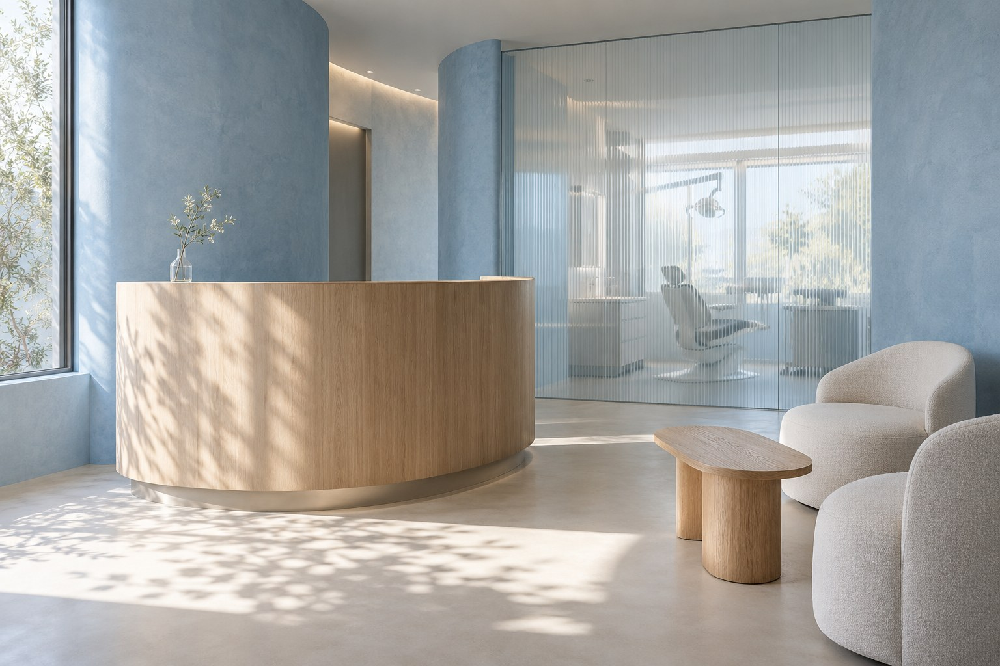

La tua visita
Indica una preferenza e prova il percorso della prima visita.
Esperienza dimostrativa. Questo è un marchio concept. Usa dati di esempio: nessuna richiesta viene inviata e nessun appuntamento viene prenotato.
Orari dimostrativi
Non inserire informazioni sanitarie, dettagli della tua pratica o altri dati riservati. I campi servono soltanto a provare il percorso.
Questo riepilogo rimane solo nella pagina e viene eliminato ricaricandola.
Hai completato il percorso dimostrativo. Nessun dato è stato inviato e non è stato creato alcun appuntamento.